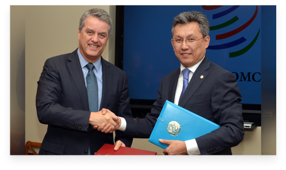

О Конференции
18 октября 2018 года в Женеве в ходе заседания Генерального совета членами Всемирной торговой организации единогласно принято решение о проведении 12-й Министерской конференции ВТО (далее – МК-12) 8-11 июня 2020 года в Республике Казахстан г. Нур-Султан.
29 октября 2019 г. в рамках визита Министра торговли и интеграции РК Б. Султанова в Женеву состоялось подписание Соглашения между Казахстаном и ВТО о проведении МК-12 ВТО. Генеральный директор ВТО Р. Азеведо подчеркнул, что подписание Соглашения является четким сигналом приверженности Казахстана принципам многосторонней торговой системы и правилам ВТО.
Учитывая опыт в организации крупномасштабных мероприятий, соответствующий статус и материально-техническое обеспечение, поручением Главы Государства (от 21 мая 2019 г.) АО «НК «QazExpoCongress» определена в качестве основного технического исполнителя и оператора бюджета МК-12.
Деловой центр ЭКСПО - это кластер с единым архитектурным решением, который объединяет в себе деловые, образовательные, конгрессно-выставочные, а также развлекательные проекты в одном комплексе.
Впервые за время проведения Министерских конференций, мероприятие будет проводиться на территории единого комплекса, где в пешей доступности находятся все объекты конференции, а также в удобных пространствах расположены отель, рестораны и кафе, в том числе Сфера «Нур-Алем», что делает удобным пребывание участников МК-12 на территории Делового центра ЭКСПО. Для проведения МК-12 ВТО определены 4 локации на территории делового центра ЭКСПО: Международный выставочный центр, Конгресс-центр, отель «Хилтон Астана» и МФЦА блок С.4.4.